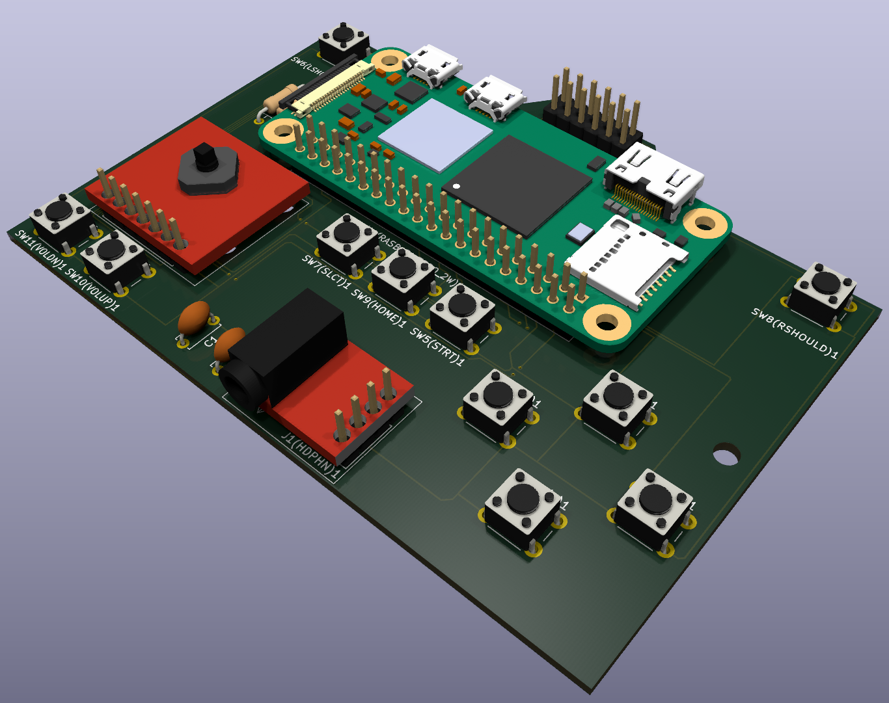

This is my About Me page! Further down you can find information about who I am and what motivates me. I talk about my background, what I do for fun, and more details about my life.
Hello, my name is Arnaan Shah. I am currently a student at Vandegrift High School in Austin, Texas. I've lived in Austin my entire life and have developed a strong passion for helping people, engineering, and solving problems. At school, I am a member of the Vandegrift band program where I play the trombone, and I'm also on the software subteam for one of my school's FTC teams, Ouroboros 4545. Outside of school, I love to watch TV shows, work on projects, cook, and hang out with my friends for fun.
I've always been motivated by a strong passion to create. I love making projects and writing code to build something that I can say is truly personal to me. It allows me to benefit people and make my own solutions to problems I have. Creating solutions that support people or solve meaningful problems gives my work purpose and leaves me with a lasting sense of fulfillment.
